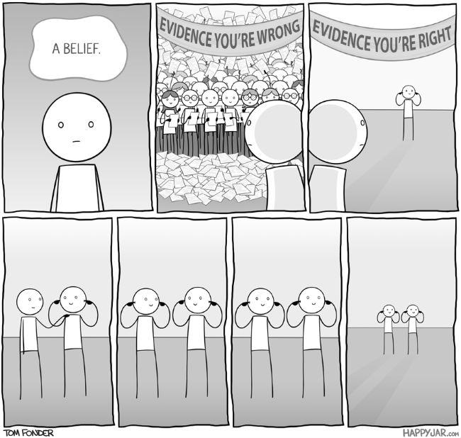

Part 1: The Best-laid schemes
Scientific experiments should be performed with ruthless accuracy, with excellent logbooks and note keeping on all details which could have any impact on the results (no matter how insignificant a detail it may seem). This is agreed upon by all scientific practitioners. Otherwise how could results ever be trusted? How could anyone ever be expected to believe something vaguely described?
Furthermore, how can anyone ever look at their work, at the thing they spend 36+ hours a week on, the thing they spend more time with than their family at times and have an objective view on? Does this mean that the people best qualified to perform research are also the worst to form ideas on it?
Repeatably
Consistently demonstrating that for all observations under a specific set of parameters, that X occurs and has Y traits; A set of instructions, which could be passed to another in the same area and allow them to reproduce and discover the same findings. This is what (some) scientists consider to be an informative and useful contribution.
These statements can be easily read, with many a vigorous head-nod and "of courses", but really, how can such rigid ideas be used as a tool to fight against the chimera which is the natural world, the universe we so desperately want to understand just the tiniest bit. A thing so huge, vast and unbelievable that even our most sophisticated hypothesis are regularly retracted, updated and doubted on.
The issues which can prevent repeatably could be anything from requiring the exact same sequence prior events to occur, to rare materials or instruments which can not feasibly be acquired again for reasons outside of a researchers control.
Time and expiration of same is another great enemy of the hypothesis. We can grow a set of plants in a field one year, but if we decide to repeat the experiment the weather will not care and it continue to provide a unique sequence of conditions, different to what came before.
Taking the idea of reproducibility to the extreme: A simple hypothesis could suggest that each time you drop a pencil from 1 meter above the floor that it will ultimately make contact with the floor below it. This is an easy to test idea, this could be tested twice, a hundred times or even many thousand times. BUT! Never can this be tested for all possible times, it is strictly impossible to test this for all times which could exist and have existed.
How can we be sure of results which cannot be repeated, and repeated, and repeated?
How can we ever be satisfied with the ease, or even the number of times a hypothesis has been tested?
The Formidable Bias
Sherlock Holmes said that "It is an error to argue in front of your data. You can find yourself insensibly twisting them round to suit your theories". Sir Arthur Conan Doyle had a remarkable gift for explaining, and giving evidence towards, the naivety of us humans…
In research the Null-Hypothesis is used in a veiled attempt to turn bias on its head. A search should not be to prove that an idea is right, but rather to prove that it is wrong. A noble endeavour, to seek ones own defeat, but really a rare occurrence. Proof of this? The lack of approval by the scientific community, where are the journals for publishing insignificant experiment findings, where are the prizes for robustness and dedication to pursuing truth over funding grants?
Wanting to be wrong in your assumptions and hypothesis is one thing, but when that would also come at the cost of a promotion, of a funding approval or even keeping a job. It almost makes perfect sense then why null-hypothesis testing, whilst experiments 101, is a fable.

Figure 1: A desire to be right
Furthermore, ideas about knowledge and expectations can bring more bias and more issues. The contrast in wanting to be proven wrong and using agnostic evidence to keep beliefs alive, is staggering. Not unlike the human vision system's remarkable methods for filling in gaps and enabling optical illusions, so too will minds craft connections which are feeble at best, to push ideas.
Does there exist such a person who is so humble that they can easily admit to being wrong, when they dedicate their life to becoming a renowned expert in a field? A difficult feat at the best of times. What funding body, tax-payer or investor is willing to hear that the breakthrough they desired is not coming. It may not even be possible. It becomes easy understand how a (un)conscious bias can form and jeopardise an experiment.